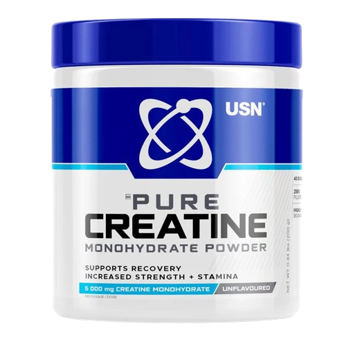
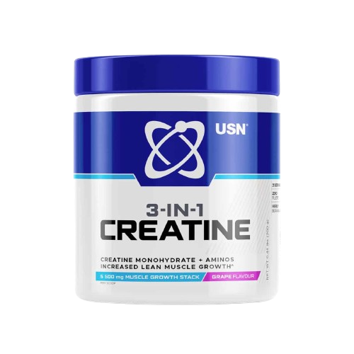
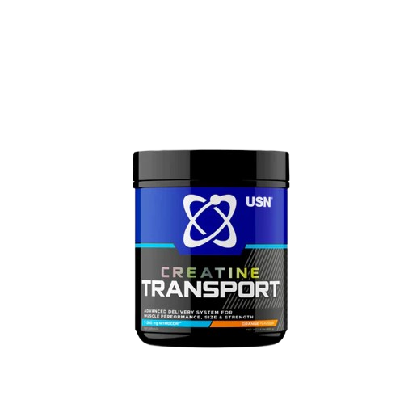
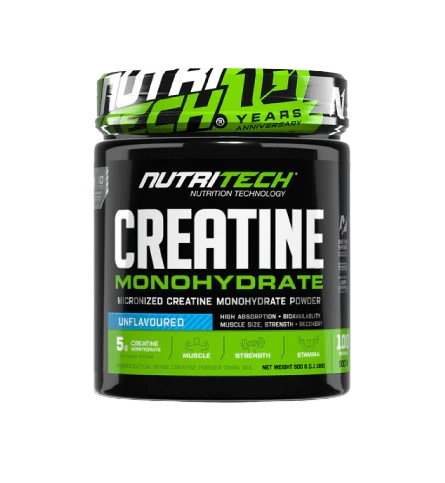
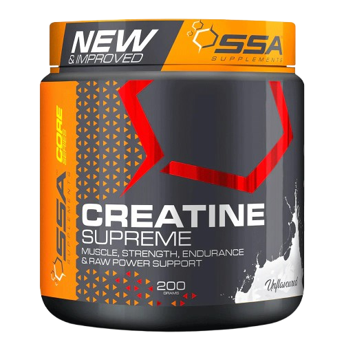

900,00MT
É um suplemento de creatina monohidratada micronizada pura, usado para melhorar desempenho, força e recuperação em treinos intensos.
Principais Benefícios:
É um suplemento de creatina monohidratada micronizada pura, usado para melhorar desempenho, força e recuperação em treinos intensos.
Principais Benefícios:
Uso diário normal (mais comum):
Melhor momento:
Algumas pessoas fazem:
Depois:

900,00MT
É um suplemento à base de creatina combinado com outros ingredientes projetado para melhorar força, desempenho e recuperação muscular durante treinos intensos.Ele costuma combinar:
É um suplemento à base de creatina combinado com outros ingredientes projetado para melhorar força, desempenho e recuperação muscular durante treinos intensos.Ele costuma combinar:
Dose típica:

900,00MT
É um suplemento de creatina avançado com carboidratos e aminoácidos projetado para melhorar desempenho muscular, força e energia durante treinos intensos.
Serve para:
É um suplemento de creatina avançado com carboidratos e aminoácidos projetado para melhorar desempenho muscular, força e energia durante treinos intensos.
Serve para:
Composição típica:

1400,00MT
É um suplemento de creatina monohidratada usado por pessoas que treinam regularmente e querem melhorar força e desempenho. Serve para:
É um suplemento de creatina monohidratada usado por pessoas que treinam regularmente e querem melhorar força e desempenho. Serve para:
Saturação:

900,00MT
É um suplemento de creatina monohidratada micronizada em pó. A creatina é um dos suplementos mais estudados e eficazes para quem faz exercícios intensos, especialmente musculação e treinos explosivos.
Serve para:
É um suplemento de creatina monohidratada micronizada em pó. A creatina é um dos suplementos mais estudados e eficazes para quem faz exercícios intensos, especialmente musculação e treinos explosivos.
Serve para:
Composição Típica: